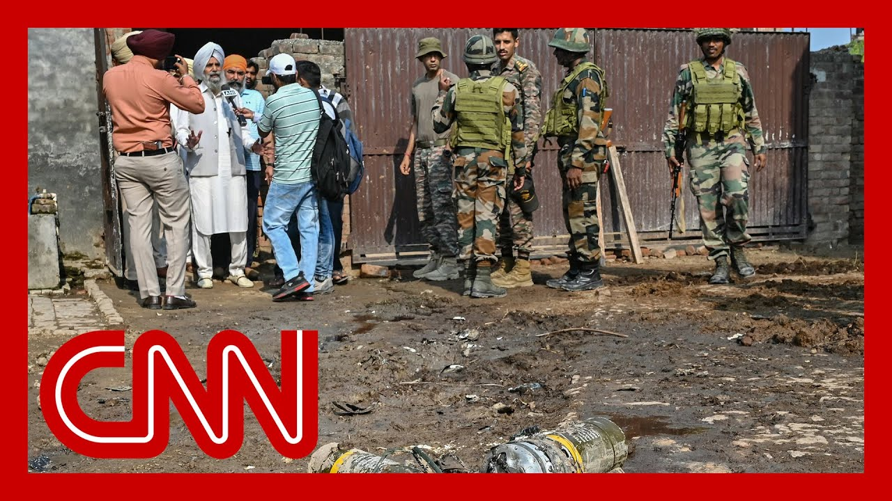

来B站一起耍【Global每日英语简报】
【印度和巴基斯坦在数周紧张局势和相互袭击后同意停火】
Summary: Secretary of State Marco Rubio played a key role in brokering the ceasefire after intense negotiations, as both sides faced escalating military exchanges, including Indian airstrikes on Pakistani bases and Pakistan's missile response, before diplomacy prevailed.
摘要： 美国国务卿马可·鲁比奥在促成停火中发挥了关键作用，经过激烈谈判，双方在印度空袭巴基斯坦基地和巴基斯坦导弹反击后，最终通过外交手段达成停火。

⏱️ Estimated Reading Time: 9 min
Nic, what's the latest?
尼克，最新情况如何？
Yeah, I was just talking to a source who was literally in the room where it happened, where Secretary of State Marco Rubio, I was told, played a massive role in bringing about this ceasefire, a ceasefire that are multiple times today and even yesterday, because it was in the works yesterday, perhaps over the last 48 hours, as we've been reporting, Pakistan was sort of on a military pause, to give, a window for diplomacy.
是的，我刚和一位消息人士交谈，他当时就在现场。据我所知，美国国务卿马可·鲁比奥在促成这次停火中发挥了巨大作用。停火今天甚至昨天多次被提及，因为昨天就在酝酿，或许过去48小时一直在进行。正如我们报道的，巴基斯坦一度暂停军事行动，为外交提供窗口。
what I understand from the sources that was blown out of the window early this morning when India attacked three airbases, one of them here in the capital, just on the outskirts of the capital, that, according to the source.
据消息人士称，今天清晨印度袭击了三处空军基地，其中一处位于首都郊区，这一举动打破了外交窗口。
Pakistan responded with a relentless a massive barrage of missiles and rockets.
巴基斯坦以猛烈的大规模导弹和火箭弹进行回击。
They say Pakistan says into Indian military facilities, bases inside India air bases, weapons storage and along that disputed line of control in Kashmir against military bases there.
巴基斯坦称，导弹袭击了印度境内的军事设施、空军基地、武器库以及克什米尔争议控制线沿线的军事基地。
They say that this from the Pakistan perspective, their communications, how they were communicating with Secretary Rubio that that really put India on the back foot.
巴基斯坦方面表示，他们与鲁比奥国务卿的沟通方式让印度措手不及。
It didn't know what had happened.
印度当时不知道发生了什么。
India, according to Pakistan, reached out to Secretary Rubio, reached out to the Saudis, reached out to the Turks, reached out to others to find a diplomatic offramp, got engaged after that onslaught.
据巴基斯坦称，印度随后联系了鲁比奥国务卿、沙特、土耳其等国寻求外交解决，在那次袭击后展开谈判。
and diplomacy.
并通过外交手段。
But telling the mediators that, they were going to go on a pause on the Indian side.
但印度告诉调解方，他们将暂停行动。
And then according to Pakistan, that didn't happen.
然而据巴基斯坦称，这并未实现。
There was another exchange of rocket fire that happened several times during the day today.
今天白天双方又多次发生火箭弹交火。
And it was only in the last couple of hours before this ceasefire came into effect, just about an hour or so ago, that there was enough of a pause to call it and say that this was real, that enough diplomacy and leverage had been put on both sides to get them to stop here.
直到停火生效前的最后几小时，大约一小时前，双方才真正暂停，确认停火有效，表明外交和施压已足够让双方停止冲突。
Now, the key issue for Pakistan going forward is water.
目前，巴基斯坦面临的关键问题是水资源。
India is still set.
印度仍坚持切断克什米尔山区三条重要河流的水源，这对巴基斯坦至关重要，甚至关乎生存。
It's cut off the water from those three vital rivers, from the, mountains in Kashmir, vital to to Pakistan, existential to Pakistan.
印度切断了来自克什米尔山区三条重要河流的水源，这对巴基斯坦至关重要，甚至关乎生存。
I said, what about that?
我问及此事时，消息人士表示：“这是停火，其他问题之后再解决。”
And the source said, look, this is a ceasefire.
消息人士说：“听着，这是停火。”
Everything works out from there.
其他问题之后再解决。
But from the Pakistan perspective, they've been up all night from the Indian perspective.
但从巴基斯坦角度看，他们整夜未眠；印度方面也是如此。
They've been up all night.
他们整夜未眠。
There was a lot of tiredness.
双方都非常疲惫。
There was a sense that they just wanted to get this done.
他们只想尽快结束冲突。
Otherwise, in the words of their source, it would have just spiraled into something much worse.
否则，用消息人士的话说，局势会恶化到更严重的地步。
It was now or never, if you will.
可以说，这是最后的机会。
It was going to get a whole lot worse.
否则情况会变得更糟。
So I think a sense of relief here, but a sense of whiplash too, for what the country has been through in the past few days.
因此，尽管感到解脱，但过去几天的经历也让人们感到冲击。
Nic Robertson, thank you for the report from Islamabad.
尼克·罗伯逊，感谢你从伊斯兰堡发回的报道。
Now we go to India.
现在我们转向印度。
In New Delhi is CNN's Matthew Chance.
CNN的马修·钱斯在新德里。
Matthew.
马修。
yeah.
是的。
Hey, Michael.
嘿，迈克尔。
Sorry.
抱歉。
Having a few technical problems here.
我这里有些技术问题。
Must be the the conflict.
可能是冲突的影响。
But, look, I mean, it's an astonishing, couple of hours, actually, because I was listening to Nick Paton Walsh speak out of Ukraine there about the proposal for a ceasefire there.
但过去几小时确实令人震惊，因为我刚听了尼克·佩顿·沃尔什从乌克兰关于停火提议的报道。
That's that's been all the demand for a ceasefire that's been very long in coming.
乌克兰的停火呼吁已经持续很久。
It's been more than three and a half years since the Ukraine war began.
乌克兰战争已持续三年半以上。
And, of course, you know, to take a skeptical view as Nick was pointing out, the Russians have not yet agreed to a ceasefire.
当然，正如尼克指出的，俄罗斯尚未同意停火。
But over here on the Indian subcontinent, with the standoff between India and Pakistan, it's not three and a half years.
但在印度次大陆，印度和巴基斯坦的对峙并非三年半。
This this latest conflict had been going on for three and a half days.
这次最新冲突仅持续了三天半。
And so, at what Trump has got in his sudden, unexpected announcement of a ceasefire between the two countries is the quick victory that he very much wanted to have but couldn't get, with Russia and Ukraine as well.
因此，特朗普突然宣布印巴停火，是他迫切希望但在俄乌冲突中未能取得的快速胜利。
But nevertheless, over the past couple of hours, less than that, even President Trump, you know, announcing on his truth social media platform that a ceasefire has been done between India and Pakistan that follows, you know, a real upsurge in violence between the two nuclear armed neighbors.
然而，过去几小时，甚至更短时间内，特朗普总统在他的社交媒体平台上宣布印巴达成停火，此前这两个拥核邻国的暴力冲突确实激增。
Remember, early this morning, excuse me, early this morning, India launched unprecedentedly deep attacks inside Pakistan.
记得今天清晨，抱歉，今天清晨，印度对巴基斯坦境内发动了前所未有的深入袭击。
Air airstrikes on Pakistani military bases, the deepest inside the country that India has struck for decades.
空袭巴基斯坦军事基地，这是印度几十年来对巴境内最深入的打击。
Really since the the war between the two countries back in in 1971.
实际上自1971年两国战争以来首次。
So extremely serious escalation there.
因此局势极度升级。
that led to a furious Pakistani response.
这引发巴基斯坦猛烈回击。
They struck dozens of targets, not just in the disputed territory of Kashmir, but elsewhere in India, as well.
巴方打击了数十个目标，不仅限于克什米尔争议地区，还包括印度其他地区。
And, you know, the fact that this was taking place between these two nuclear armed neighbors, I think, shook the international community and shook, the United States in particular, into action, and basically forced diplomats from Washington to really get engaged, and to bring the two sides together, to, to get them to step back from the brink.
这两个拥核邻国的冲突震惊了国际社会，尤其是美国，促使华盛顿的外交官积极介入，推动双方退后一步。
Remember, it was only a couple of days ago that JD Vance, U.S. vice president, was saying that dispute between India and Pakistan, it's not about business.
记得几天前，美国副总统JD·万斯还表示，印巴争端“无关紧要”。
That was those were the words he literally said.
这是他当时的原话。
And what we now understand from the secretary of state, Marco Rubio, is that actually there's been a day of intensive negotiations involving him and JD Vance speaking to the leadership and the military, leaders on both sides of the divide in India and Pakistan, finally getting them to talk and to agree to step back from the brink that there's going to be more talks, to finalize this cease fire.
而据国务卿马可·鲁比奥透露，过去一天他与万斯密集谈判，与印巴领导人和军方高层沟通，最终促使双方对话并同意退后一步，后续还将进一步谈判以敲定停火。
But, you know, it seems that for the moment, the threat of a spiraling, escalating conflict between these two, countries, India and Pakistan, thankfully, has has receded.
但所幸目前印巴冲突升级的威胁似乎已经消退。
Michael, Matthew Chance, thank you for the report from New Delhi.
迈克尔，马修·钱斯，感谢你从新德里的报道。
Join.
接下来。